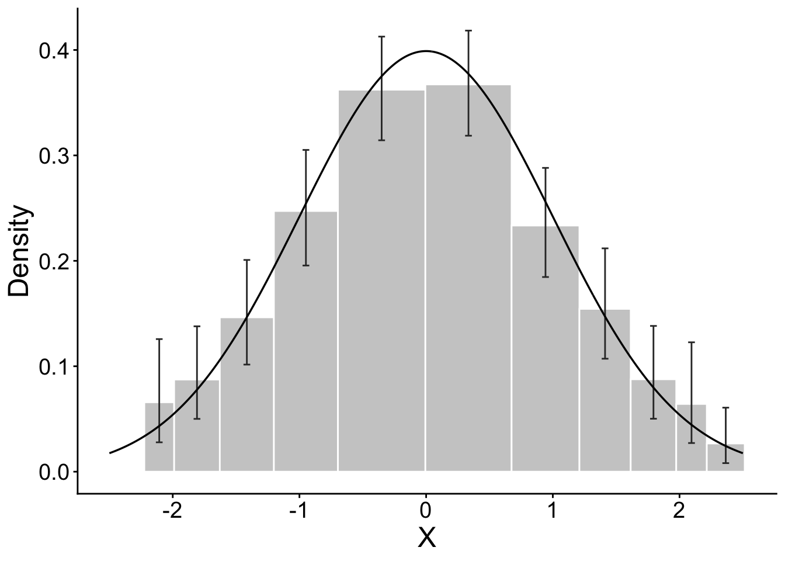
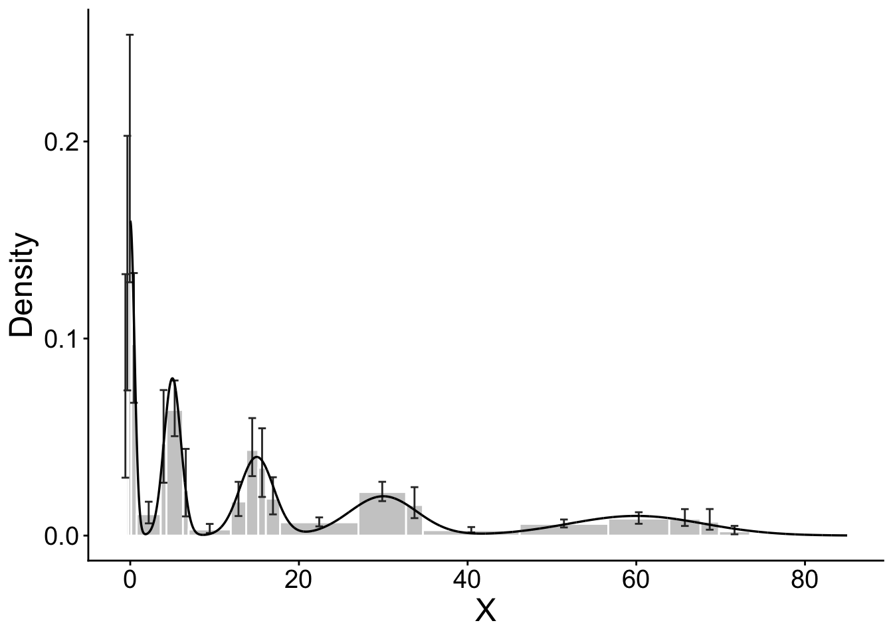
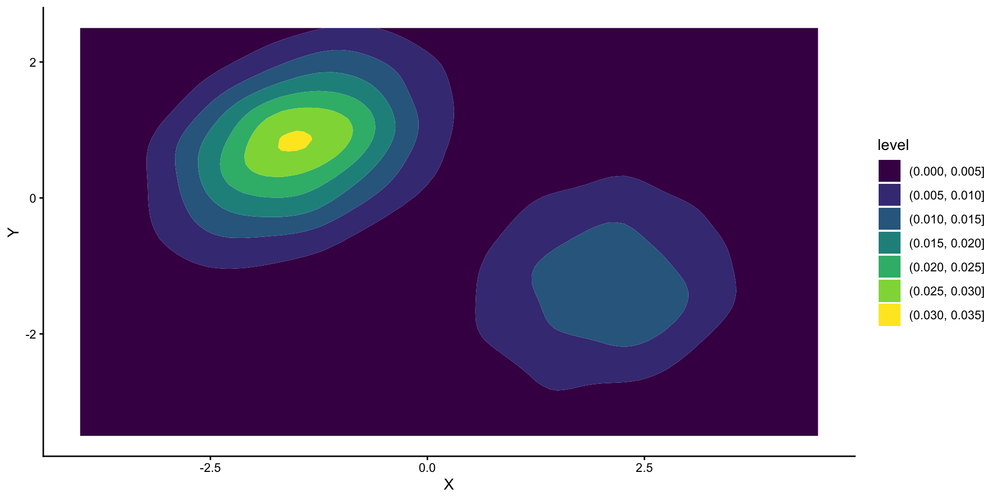
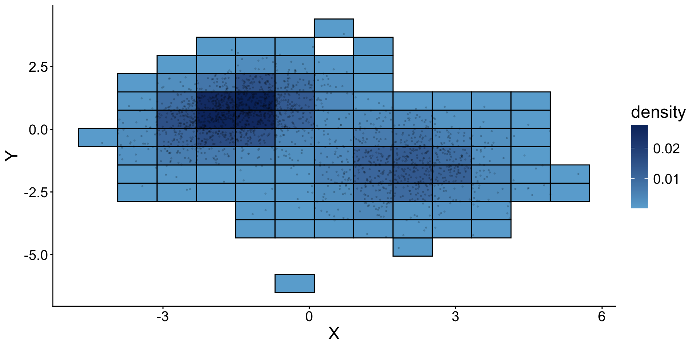
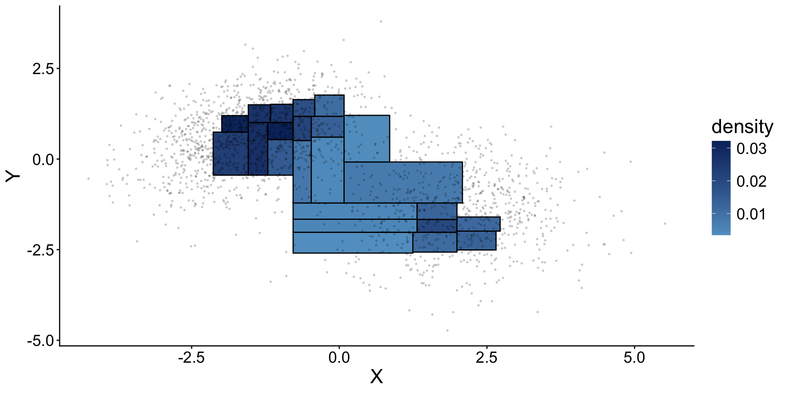
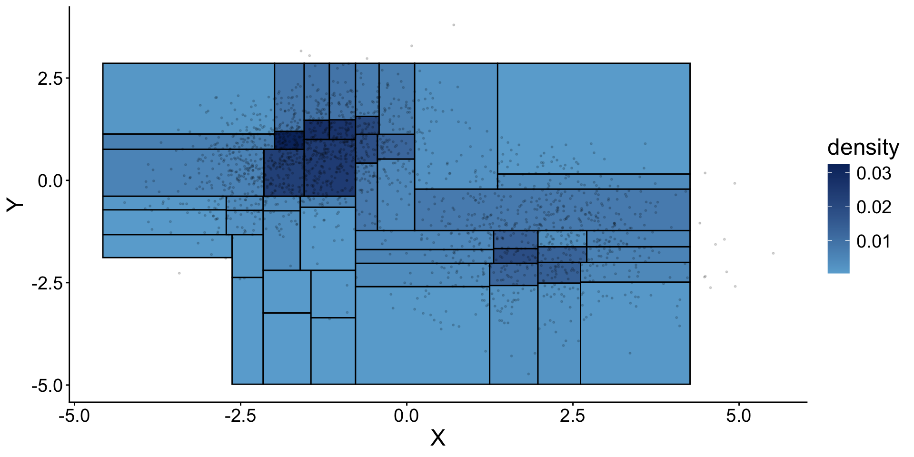
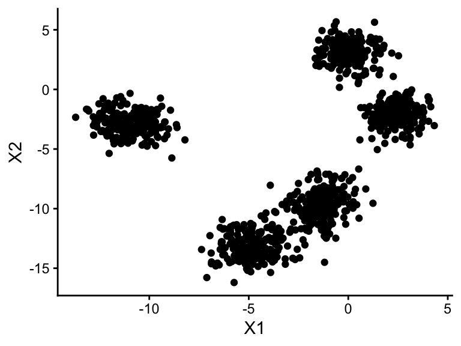
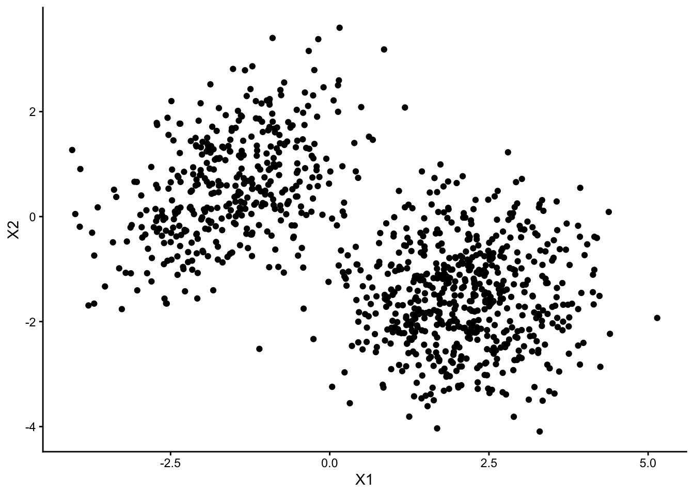
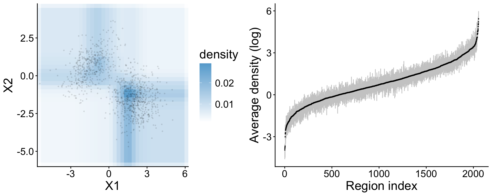

Section 4 Summarizing data using the Beta-tree histogram
This notebook includes code to replicate results in Section 4 of the paper “Beta-trees: multivariate histograms with confidence statements”.
Example 1: Beta-tree histogram with confidence intervals for univariate distributions
In the first example, we visualize the Beta-tree histograms and corresponding confidence intervals for univariate distributions. We consider two distributions: standard Gaussian and Harp density, defined in Li et al. (2020).
# Figure 1 in paper and Figure 1 in supplement (use alpha = 0.01, 0.1, 0.2 in the three figures)alpha_val <-0.01hist_gaussian <-plot_univariate(n =2000, distribution ="gaussian", alpha = alpha_val)hist_harp <-plot_univariate(n =2000, distribution ="harp", alpha = alpha_val)hist_gaussian$g_hist

hist_harp$g_hist

Example 2: Two-dimensional uniform distribution
Next, we compute the histogram for a 2-d uniform distribution using a sample of size \(n = 1,000\). We plot a bounded Beta-trees histogram at level \(\alpha = 0.1\) that excludes 0.5% of the data in each tail end of the two coordinates.
# Figure 2 in paper (left)g_gaussian_small <-PlotHist(X_gaussian_small, hist_gaussian_small)# Figure 3 in paper (left)g_gaussian_large <-PlotHist(X_gaussian_large, hist_gaussian_large)# Figure 3 in paper (right)g_gaussian_large_bounded <-PlotHist(X_gaussian_large, hist_gaussian_large_bounded)
Histogram with fixed number of bins in each dimension. In both settings, we choose 16 bins in each dimension.
Our approach, where we use weighted Bonferroni correction and set \(\alpha\) = 0.1. Because only bounded regions are considered in the histogram, and thus observations near the boundary would not be covered by any regions in the histogram. That’s why the space on the boundary is empty. This behavior might be helpful in terms of visualization because it allows users to focus on where observations are more concentrated. On the other hand, these unbounded regions on the boundary cannot be merged, and therefore even if the data is from a uniform distribution (see Appendix), the histogram would be composed of multiple regions instead of a single region, which might be misleading at a first glance. Another potential issue is that when the dimension increases, a higher number of observations would be excluded, whereas we would ideally want to include as many samples as possible.
To address this issue, we can construct a histogram using the algorithm using all of the observations inside the initial bounded region. The bounded region can be defined by manually specifying the first few partitions. For example, instead of partitioning along the median, we can partition along the \(x\)-axis at 0.005 and 0.995 quantiles first, and then partition along the \(y\)-axis (using samples inside the first region) at 0.005 and 0.995 quantiles. While the points outside of the two ranges would be excluded, all of the points inside the initial bounded region would be included in the histogram.
The histogram with fixed number of bins include 3375 regions, and among them only 977 are non-empty. In comparison, the Beta-tree histogram contains 127 regions (the bounded histogram contains 315 regions). We plot the estimated density on the plane \(z = 1\). We also plot observations that lie in a slab parallel to the \(x-y\) plane where \(z\)-axis is between 0.8 and 1.2. Data in this slab should be mostly from the first population. From the figure below, we observe that the kernel density estimator captures both the first and the second population, and the Beta-tree histogram are also able to capture two populations, and provides a more parsimonious description of the data compared to the histogram with fixed bin size.
# set parameterszmin <-0.8zmax <-1.2zloc <-1# data pointsxinside <- X_3d[which(X_3d[,3] <= zmax & X_3d[,3] >= zmin), ]# 1. kernelkernel3dloc <-expand.grid(x =seq(-4, 4.5, length.out=100), y =seq(-3.5, 2.5, length.out=100), z =1)kernel3dval <-predict(kernel3d_estimate, x =cbind(kernel3dloc$x, kernel3dloc$y, kernel3dloc$z))dat <-tibble(X = kernel3dloc$x,Y = kernel3dloc$y,Density = kernel3dval)# Figure 4 (a) in paper FigKernel3d <-ggplot(data = dat, aes(X, Y, z = Density)) +geom_contour_filled() +xlim(-4,4.5) +xlab("X") +ylab("Y") +theme_classic()FigKernel3d

# 2. fixed bin histogram# dim indicates which dimension is *orthogonal* to the slice# Figure 4 (b) in paperplot3dhist <-function(hist, xinside, loc, dim, xlab ="X", ylab ="Y"){ xinside <- xinside[,-dim] index <- (1:6)[-c(dim, dim+3)] HistSubset <- hist[which(hist[,dim] < loc & hist[,(3+dim)] > loc & hist[,(2*dim +1)] >2*10^(-4)), , drop = F] g <-ggplot() +geom_rect(aes(xmin = HistSubset[,index[1]], xmax = HistSubset[,index[3]],ymin = HistSubset[,index[2]], ymax = HistSubset[,index[4]],fill = HistSubset[,7]), color ="black") +scale_fill_gradient2(low ="#f7fbff", mid ="#6baed6", high ="#08306b",aesthetics ="fill", name ="density") +geom_point(aes(x = xinside[,1], y = xinside[,2]), size =0.4, alpha =nrow(xinside)^(-0.25)) +xlab(xlab) +ylab(ylab) +theme_classic() +theme(text=element_text(size =18))return(g)}FigFixed3d <-plot3dhist(FixedHist3d, xinside, zloc, dim =3)FigFixed3d

# 3. Beta-trees histogram # Figure 4 (c) in paperFigHist3d <-plot3dhist(hist3d, xinside, zloc, dim =3)FigHist3d

# 4. Bounded beta-trees histogram# Figure 4 (d) in paper FigBoundedHist3d <-plot3dhist(histBounded3d, xinside, zloc, dim =3)FigBoundedHist3d

Example 5: Ten-dimensional mixture of Gaussians
In this example we visualize an equal mixture of five Gaussian distributions of dimension \(d = 10\). The cluster centers are iid \(N(0,8)\) and the covariance matrices are random matrices.
n_10d <-100000d_10d <-10
set.seed(10)ncluster <-5ndim <-10# number of coordinates in the clustercoord <-matrix(rep(1:d_10d, ncluster), nrow = ncluster, byrow = T)prob <-rep(1/ncluster, ncluster)mu <-matrix(rnorm(ncluster * d_10d, 0, 8), ncluster, d_10d)sigma <-array(NA, dim =c( ndim, ndim, ncluster))for(i in1:ncluster){ U <-qr.Q(qr(matrix(rnorm(d_10d^2), d_10d))) lambda <-rchisq(d_10d, 5) /5 sigma[,,i] <-t(U) %*% (diag(lambda) %*% U)}
data <-sample_gaussian_mixture(n_10d, d_10d, mu, sigma, coord, prob)# plot the first two dimensions index <-sample(1:n_10d, 1000)ggplot() +geom_point(aes(x = data[index, 1], y = data[index, 2])) +xlab("X1") +ylab("X2") +theme_classic()

Adaptive Beta-trees histogram
We construct an adaptive Beta-tree histogram and visualize (1) the average of true density within each region versus the adaptive Beta-tree histogram estimates and confidence interval, and (2) marginal distribution of \((X_3, X_4)\) conditional on being in the region \(|X_1-\mu_{1,1}|\leq 2\) and \(|X_2 - \mu_{1, 2}|\leq 2\). The data in this region should mostly correspond to observations in the first cluster.
Note: the adaptive histogram under-estimates the probability mass inside the constraint as the true probability mass within the constraint should be about 20% whereas the estimate is only about 6%.
sum(plot_data_adaptive_conditional$est_prob[,1])
[1] 0.04179336
Bounded Beta-tree histogram
We repeat the analysis with bounded Beta-trees histogram without adaptively choosing partition dimension.
As in the adaptive histogram, we significantly underestimate the probability mass within the constraints.
sum(plot_data_bounded_conditional$est_prob[,1])
[1] 0.06327318
Example 6 Beta-tree histogram with estimated marginal distribution
In this example, we sample data from a \(d = 30\) dimensional distribution, where \((X_1, X_2)\) is sampled from a mixture of 2-d Gaussian, and the \(X_3,\ldots, X_d\) are sampled from 1-d Gaussian mixtures.
The first two dimensions are sampled from the distribution \[
0.4 \: N\left(\left(\begin{matrix}
-1.5 \\ 0.6
\end{matrix}\right),
\left(\begin{matrix}
1 & 0.5 \\ 0.5 & 1
\end{matrix}\right)\right) + 0.6 \:N\left(\left(\begin{matrix}
2 \\ -1.5
\end{matrix}\right),
\left(\begin{matrix}
1 & 0 \\ 0 & 1
\end{matrix}\right)\right).
\]\(X_3,\ldots, X_d\) are i.i.d. from
\[
0.5\: N(3.5, 0.5) + 0.5\: N(6, 0.25).
\]
n_30d <-100000d_30d <-30
data <-sample_hd(n_30d, d_30d)# plot the first two dimensions index <-sample(1:n_30d, 1000)ggplot() +geom_point(aes(x = data[index, 1], y = data[index, 2])) +xlab("X1") +ylab("X2") +theme_classic()

Because \(X_3,\ldots, X_{30}\) are independent of each other, if we estimate the marginal distributions \(\hat{F}_j\) transform \(X_j\) to \(\hat{F}_j(X_j)\), then except for the first two variables, transformed data is from independent uniform distribution, and thus the adaptive Beta-trees histogram would mainly split in the first two dimensions, thus providing a better estimate of the density.
plot_data_hd <-plot_histogram_data(X =as.matrix(data), hist = adaptive_hist,lower_constraint =rep(-Inf, d_30d),upper_constraint =rep(Inf, d_30d), plot_coord =c(1, 2), nint =40,show_data = T, ndat =1000 ) # Figure 6 (a) in paper g_adaptive_hd <-plot_histogram(plot_data_hd)true_probs_hd <-compute_probability_mass(rect = adaptive_hist[,1:(2*d_30d)], distribution ="hd")# Figure 6 (b) in paper g_density_hd <-plot_density(true_probs = true_probs_hd, est_avg_density = adaptive_hist[,2*d_30d+1], lower_bound = adaptive_hist[,2*d_30d+2], upper_bound = adaptive_hist[,2*d_30d+3], rect = adaptive_hist[,1:(2*d_30d)])grid.arrange(g_adaptive_hd, g_density_hd, nrow =1)

From the table of frequencies the adaptive histogram splits along each dimension, we can see that the first two directions are split much more frequently compared to the other coordinates.
In this section, we examine how the width of confidence intervals vary as sample size \(n\), data dimension \(d\) and significance level \(\alpha\) changes. The data is from a multivariate Gaussian distribution with mean 0. The covariance matrix is a random matrix with eigen values \(\lambda_i = \tilde{\lambda}_i / 5\) where \(\tilde{\lambda}_i\stackrel{iid}{\sim}\chi^2_5\). We report the median width of confidence intervals of all the histogram regions.
# the code below is run on the cluster n_val <-c(2000, 5000, 10^4, 10^5, 5*10^5)alpha_val <-c(0.01, 0.05, 0.1, 0.2)d_vals <-c(1, 4, 8, 16)nrep <-100for(i in4){if(i ==1){ Sigma <-1 }else{ U <-qr.Q(qr(matrix(rnorm(d_vals[i]^2), d_vals[i]))) lambda <-rchisq(d_vals[i], 5) /5 Sigma <-t(U) %*% (diag(lambda) %*% U) } result <-get_summary_stat(d = d_vals[i], B = nrep, file_path = store_dir, Sigma = Sigma)write.table(result, file =paste0(store_dir,"standard_", d, ".txt"))}
This simulation is run on the cluster. As an example, you can run the following example which considers a smaller number of repetitions